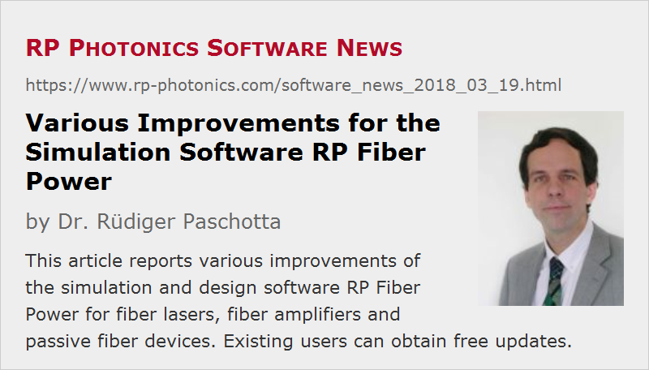

Various Improvements for the Simulation Software RP Fiber Power
Posted on 2018-03-19 in the RP Photonics Software News (available as e-mail newsletter!)
Permanent link: https://www.rp-photonics.com/software_news_2018_03_19.html
Author: Dr. Rüdiger Paschotta, RP Photonics Consulting GmbH
Abstract: This article reports various improvements of the simulation and design software RP Fiber Power for fiber lasers, fiber amplifiers and passive fiber devices. Existing users can obtain free updates.

The software RP Fiber Power as recently obtained a number of improvements, particularly in the area of ultrashort pulse propagation (partly in response to user requests or experiences during support cases). Customers using that software can get a free update for getting those new features – just tell me if you want it.
In the following sections, I describe those features and some underlying ideas.
Note that when using the software you can be regularly given notice about such updates (including bug fixes). For that, check “Regularly check for software updates” and enter the desired time interval for those checks. The software will then occasionally contact the RP Photonics web server, telling it the software version you are using (e.g. RP Fiber Power V7) and the compilation date – nothing else. The web server will then tell the software what updates are available – just everything for your version which was done after the given compilation date. If the software finds there are any updates, it offers to get that information displayed in your browser. If you decide that this is relevant for you, you can tell us to give you that update. Available upgrades to more advanced versions are also displayed.
Additional Filtering or Modulations within a Fiber
When we simulate pulse propagation through an optical fiber, the pulse can undergo various changes due to laser gain or absorption by the laser-active dopant, chromatic dispersion and fiber nonlinearities. Now I have introduced the new function set_mod(expr$, cond$). That defines an additional modulation in the time or frequency domain, which is applied after each numerical step in the fiber. The first argument is a real or complex expression, which can depend on the position z and on either t (time) or f (frequency); the amplitude trace of the pulse in the time or frequency domain will be multiplied with the defined factor. If the second argument is not an empty string, it defines an expression which determines whether or not the modulation is applied at a certain z position. Those expressions can also depend on pulse properties, e.g. the pulse energy.
The function could be used for simulating additional spectral filtering effects. In that case, one would use a frequency-dependent multiplication factor of the amplitudes. Through the second argument (a condition), one could apply such filtering only at certain locations – for example at a point where one inserted some kind of bandpass filter into the fiber. (Previously, one would have had to simulate the propagation through a sequence of fibers and other optical elements, somewhat less conveniently.) Also, one can make that filtering dependent on the spatial position. Imagine, for example, that some extra loss is introduced by bending the fiber, where the bend radius is gradually decreasing along the fiber. (Bend losses would normally be taken into account only in numerical beam propagation, but not for ultrashort pulse propagation, where we ignore the transverse dimension.)
The new function set_add() works similarly – the difference to set_mod() is only that some amplitudes are added in the time or frequency domain. This feature could be used e.g. to add another pulse at a certain location in the fiber, or to add noise (e.g. using random numbers with Gaussian probability distribution).
Phase Shifts
There have already been functions for applying phase shifts in the time or frequency domain. In some simpler cases, however, one applies a phase shift without time or frequency dependence. For that, the new function pp_phase_shift() has been introduced, which is somewhat more convenient to use. The software will apply it in the time or frequency domain, depending on what is numerically more efficient in your situation.
Polarization-dependent Gain and Absorption
In optical fibers, gain and absorption are usually not polarization-dependent. However, the software is increasingly applied to bulk laser systems, and those may contain optically anisotropic laser crystals. For such applications, the new function set_polarization() has been introduced. After defining the “optical channels” in a fiber (e.g. pump, forward and backward signal wave), one can use that function to assign polarization directions to them. The effect of that is that the transition cross sections are calculated with different functions. Normally, if we have an Yb-doped gain medium, for example, the wavelength-dependent absorption and emission cross sections would be calculated with the functions s_a_Yb(l) and s_e_Yb(l). If you define the polarization direction to be “x”, for example, those functions would be s_a_Yb_x(l) and s_e_Yb_x(l).
The same things can be done in the context of numerical beam propagation. The function bp_set_channel_p() can be used to define a beam propagation channel with polarization. Also, the function bp_set_I_p() now has a third argument for the polarization direction.
Integrated Intensities
When you simulate numerical beam propagation, you can use the function bp_I(x, y, z) to obtain the calculated intensity at any location. In some cases, you want to have that integrated in x or y direction. For that purpose, the new functions bp_I_x() and bp_I_y() have been introduced. They are convenient, for example, if you want to make a color plot where the intensity distribution is shown in the x-z plane. If you would simply plot the intensity values with y = 0, you would not “see” optical powers outside that plane. If you use bp_I_y(), you effectively project all power to the x-z plane.
This article is a posting of the RP Photonics Software News, authored by Dr. Rüdiger Paschotta. You may link to this page, because its location is permanent.
Note that you can also receive the articles in the form of a newsletter or with an RSS feed.
|  |
If you like this article, share it with your friends and colleagues, e.g. via social media:
These sharing buttons are implemented in a privacy-friendly way!